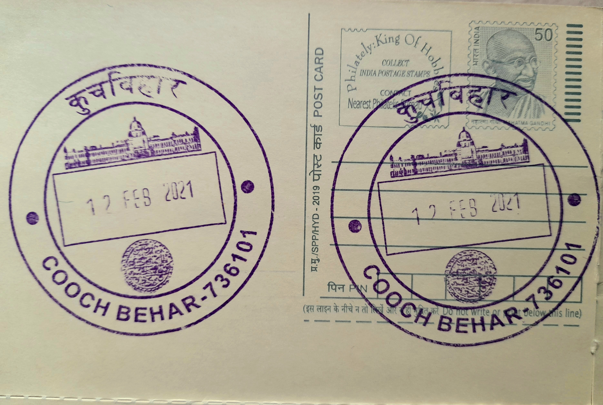

Cooch Behar Palace
কোচবিহার রাজবাড়ি


Cooch Behar Palace, formally named the Victoria Jubilee Palace, takes its name from the occasion that prompted its construction: Queen Victoria's Golden Jubilee of 1887. Maharaja Nripendra Narayan of the Koch dynasty, who had travelled to England that year with Maharani Suniti Devi to attend the Jubilee celebrations and meet the Queen in person, returned home determined to build a residence that mirrored the grandeur he had witnessed at Buckingham Palace. The resulting building, raised in the heart of Cooch Behar town, was conceived less as a traditional fort-palace of a Bengal princely state and more as a declaration of the ruling family's closeness to, and admiration for, the British crown.
As a structure, the palace belongs to the distinctive category of Anglicised princely architecture that emerged across colonial India in the late nineteenth century, where ruling houses signalled loyalty and modernity through European design rather than indigenous idiom. It served for decades as the residence and administrative seat of the Cooch Behar state, a kingdom whose rulers were unusually engaged with British institutions, sending their children to be educated in England and encouraging participation in sport, administration, and public life. Today the palace is recognised as a monument of national importance and is protected under the Archaeological Survey of India, placing it among the subcontinent's formally listed heritage structures rather than merely a local landmark.
Construction was completed under Nripendra Narayan's direction in the Italian Renaissance Classical style, with the double-storeyed brick building raised on a basement roughly 1.5 metres high. The structure measures approximately 120 metres from north to south and 90 metres from east to west, giving it a footprint reported at around 51,309 square feet, and its symmetrical facade is marked by Corinthian columns and tall arched windows typical of European classical revival design. At its centre rises a monumental dome, reaching an estimated 124 feet above ground level, topped by a cylindrical ventilator and covering the palace's grand central hall, which along with the adjoining Durbar Hall and reception rooms formed the ceremonial core of the building.
Among the palace's notable associations is the family it housed across generations, several of whose members achieved recognition well beyond Cooch Behar. Jitendra Narayan, the second son of Nripendra Narayan, succeeded as the twenty-third Maharaja and was educated at Eton before serving with the Imperial Cadet Corps; his daughter, Gayatri Devi, born at Cooch Behar, later became Maharani of Jaipur and went on to serve as a Member of the Lok Sabha from 1962 to 1971, becoming one of independent India's best-known political and cultural figures. The palace's grounds and durbar spaces, built to host state functions and European-style receptions, reflect this blending of Indian royal ceremony with British social convention that defined the family's public life.
Following the merger of Cooch Behar state into the Indian union in 1949, the palace passed out of royal administrative use and was eventually handed over to the Archaeological Survey of India for conservation, a process that has kept its facade, halls, and surrounding grounds largely intact. It now functions as a museum displaying portraits, weapons, furniture, and other artefacts of the Koch dynasty, drawing visitors alongside the nearby Madan Mohan Temple and other Cooch Behar heritage sites administered under the same regional conservation circle. The palace is maintained today as a protected monument open to the public, its halls preserved much as they stood when the Koch rulers used them for durbars and receptions a century ago.
| Date of Introduction | November 29, 2008 |
|---|---|
| Address | Senior Postmaster, |
| Cooch Behar HO, | |
| Cooch Behar (dt.), West Bengal - 736101. |